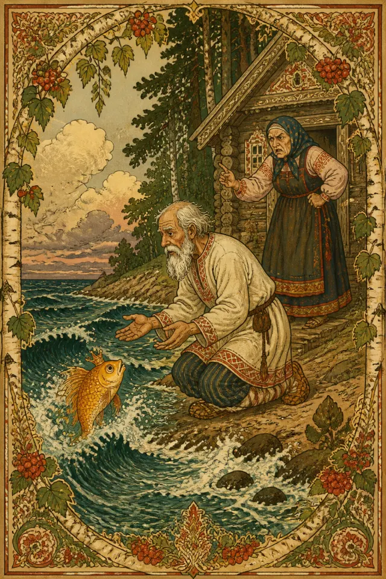

Русские авторские сказкиСлушать
Сказка о рыбаке и рыбке
Возраст: 6+ · Популярность: Очень высокая · Чтение: 7 мин чтения
Персонажи: Старик, Старуха +1
1 сказка
Русские авторские сказки на сайте «Сказки от Каму»: 1 сказка для семейного чтения, сказок на ночь и чтения вслух, с аудио, иллюстрациями и чтением онлайн.

Возраст: 6+ · Популярность: Очень высокая · Чтение: 7 мин чтения
Персонажи: Старик, Старуха +1